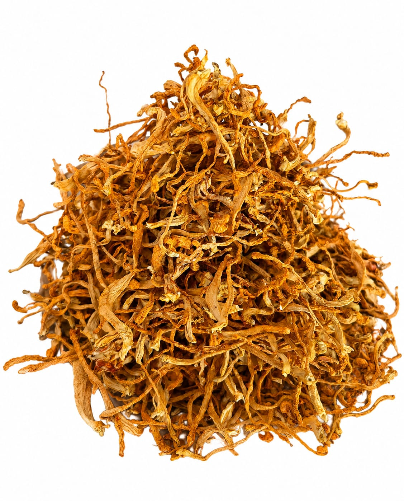

A cultivated species
Cordyceps militaris is a species of entomopathogenic fungus that can be cultivated under controlled conditions.
Cultivated Cordyceps militaris
Crafted for Vitality.
Dehradun, Uttarakhand, India
THE SHILA PRODUCT
A cultivated functional mushroom, grown in small batches in Dehradun.
SHILA cultivates Cordyceps militaris in controlled growing environments and produces it in limited batches. Our approach is deliberately focused on careful cultivation rather than maximizing production volume.
Limited production with attention given to each growing cycle.
Grown under controlled cultivation conditions rather than harvested from the wild.
Our focus is on the naturally developed fruiting body itself.

THE MUSHROOM, AS IT IS
From cultivation to harvest, SHILA focuses on the fruiting body itself.
We keep our production limited and our presentation straightforward — allowing the cultivated mushroom to remain at the centre of what we offer.
See how we cultivate it →GET TO KNOW THE SPECIES
A brief introduction to the species behind what we cultivate.
Cordyceps militaris is a species of entomopathogenic fungus that can be cultivated under controlled conditions.
Its characteristic orange-red fruiting bodies make it visually distinctive among cultivated functional mushrooms.
The species has attracted scientific interest because of compounds including cordycepin, adenosine and polysaccharides.
Unlike wild-harvested Ophiocordyceps sinensis, C. militaris can be cultivated under controlled conditions.
THE SHILA APPROACH
The species we cultivate and prepare in our own growing operation.
We intentionally keep production limited rather than positioning SHILA around mass production.
The physical mushroom itself, rather than an anonymous mushroom-derived ingredient.
A straightforward approach that keeps the cultivated ingredient at the centre.
CURRENTLY
Our production is currently limited, and availability may vary between batches.
Whether you're interested in trying SHILA, discussing availability, or exploring a business enquiry, we'd be happy to hear from you.
Enquire About Availability